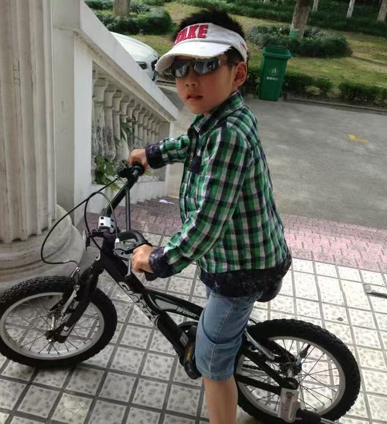
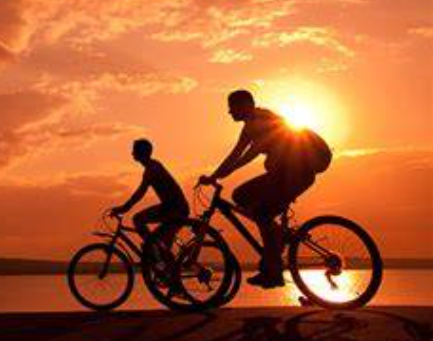
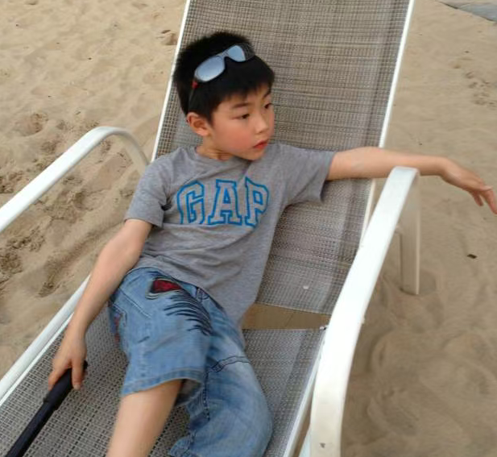
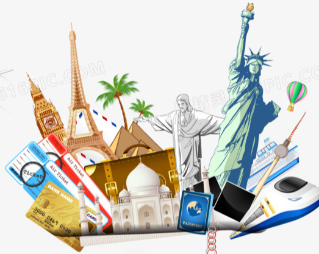

Welcome to my personal portfolio website!
I am Andrew, a computer science student who is super handsome.
Sports
Cycling clears my head all the time after long studys. Also riding through the city helps me stay fit and relieves stress. It feels amazing to explore new places on two wheels and watch the kilometers add up.


Traveling
Traveling opens my eyes to new cultures and ideas. It let's me experiencing different lifestyles (It is also fun), It teaches me to adapt to new situations, I love it.


Gaming
Gaming is always my biggest way to relax and recharge. It has maybe sharpens my problem-solving skills and strategic thinking. But even with out proving, Gaming has for sure makes me a better.